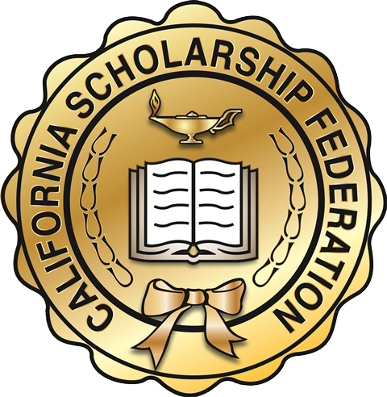
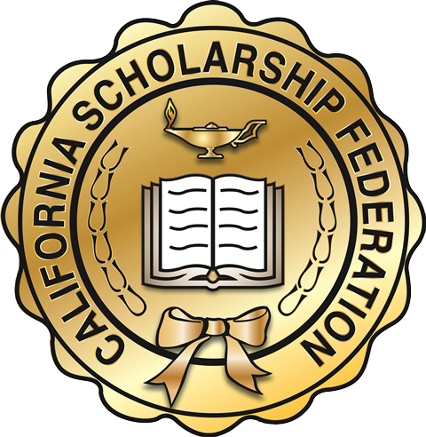

Emily Jauregui
Hello, my name is Emily Jauregui; I am a freshman at the University of California, Riverside and I will be graduating in May of 2024. As most know, football snack bars are the most popular snack bars which heightened my skills in taking orders and handling food. This helped me develop communication skills, handling money, and even working with food. I also worked at the volleyball snack bar. While in high school, I took a foods and nutrition class which covered the basis of sanitation, food preparation and cooking skills in a restaurant environment. We learned how to properly wash your hands, to cut foods, to learn about proper cooking temperature for foods, and most importantly how to cook. All of these combined will be beneficial to the skills that are needed for this job.
In addition, I was a student-athlete in high school, which has taught me about work ethic and teamwork. As a student I worked very hard to maintain a 4.0 plus GPA. This work ethic translates to my work ethic in a hands on environment because I want to work hard and be the best employee that I can possibly be. I am a people pleaser and I like to please myself so I will work hard to accomplish tasks and get them done correctly. I am also knowledgeable in teamwork due to my experience in sports. Everybody has their corks and it’s important to find unique aspects of people to see how they are a significant piece in the work space. Communication between coworkers is just as important as with the customers to help the establishment run smoothly. Although I may not have experience for another restaurant, I do have experience in a similar environment and I understand the communication aspect of the job as well.
I also have helped within my community. I have participated in clubs such as Interact Club and California Scholarship Federation. Both of these clubs focus on giving back to the community by volunteering our time to help make the community a better place. I have done field clean up, donated clothes, donated food to food drives, and helped the less fortunate by helping a family in need during the holiday season. All of these have contributed to my character in giving back to the community in order to help others.
Experience
California Scholarship Federation
• Helped raise money
• Faciliated Meetings
• Wrote down participates
• Organized Meetings
Education
University of California, Riverside
Portfolio


© Emily Jauregui
